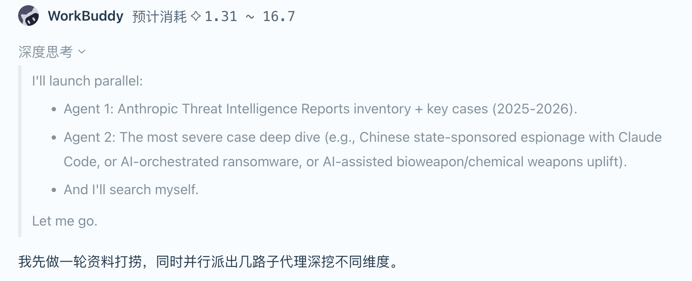
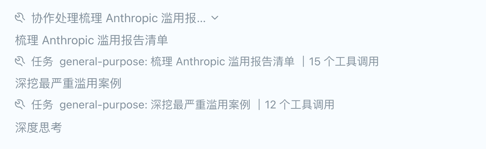

AI 夜校 · 第四课
Multi-Agent
多智能体协作系统
当一个 AI 不够用的时候——让一群 AI 像项目组一样协同工作
方向键 ← → 翻页 · 共 7 页
01 · 案例
一次多智能体的任务
以「撰写行业分析报告」为例：Orchestrator 全程调度，专业 Agent 按依赖关系激活、流水线并行。
Analyst 不等 Researcher 完工即启动，形成流水线
前置条件满足（数据源 ≥3 条）即触发下游 Agent
55s 后 Orchestrator 验收、回收资源、写入持久化
02 · 通信
Main Agent 如何给 Sub-agent 派活？
Sub-agent 之间从不直接对话，一切通信经过 Main Agent 路由与共享内存中转——这是避免状态混乱的铁律。
任务下发
Main Agent 把子任务描述 + 上游必要数据，显式注入 Sub-agent 的独立上下文。Sub-agent 看不到 Main 的历史对话，只拿到"干净"的任务书。
局部执行
Sub-agent 用自己的 system prompt（专属角色）工作，可调用白名单工具、对子任务做局部规划（Plan Mode），但 token 与调用次数有硬上限。
状态上报
执行中的关键进展（如"已获取 3 条数据源"）写入共享内存并触发事件，Main Agent 据此决定是否提前激活下游，形成流水线。
03 · 回调与内存
结果如何回来？内存怎么管？
Sub-agent 完工后：结果摘要回传 Main Agent → 关键记忆写入持久化 → 进程终止释放资源。Main Agent 对回调信息做三件事：
摘要注入
只接收压缩后的结果摘要（非完整上下文），防止 Main 的上下文窗口被撑爆。
注意力降权
标记信息来源，降低外部结论权重，Main 优先相信自己的最终推理。
矛盾仲裁
多个回调结果冲突时启动仲裁（详见第 6 页），此处简单带过。
三种内存方式
推理中间步骤、临时变量。进程结束即销毁，Sub-agent临时上下文。
写入 Blackboard 的数据源、中间结果，供其他 Sub-agent 读取，任务周期内有效。
关键产出、错误日志、检查点（Checkpoint），写入数据库，支持跨会话查询与任务恢复。
04 · 总结
总结通信全景
三个方向的通信，各司其职，永不越界。
任务书注入独立上下文，对应第 2 页 STEP 1
不直接互访，中间产物经 Blackboard 中转
摘要回传，检查点落库，对应第 3 页三种内存
05 · 冲突解决
意见不一致时，听谁的？
多个 Sub-agent 返回矛盾结果时，Main Agent 先给冲突分类，再按类型选策略——事实找证据 · 观点看目标 · 方法算成本。
证据链回溯
不看结论看证据，信源评级 + 独立复现
元推理仲裁
让Main-agent进行推理
置信度加权
按历史Sub-agent的靠谱程度信任
本课小结
Multi-Agent 的本质是组织工程：Main 定目标、分任务、收报告；Sub 独立上下文、受限自治、用完即毁。
06 · 实战
在 WorkBuddy 中亲手触发一次 Multi-Agent
选择 DeepSeek 模型，在提问中加入下面这段标签，即可强制开启 Multi-Agent 模式：

